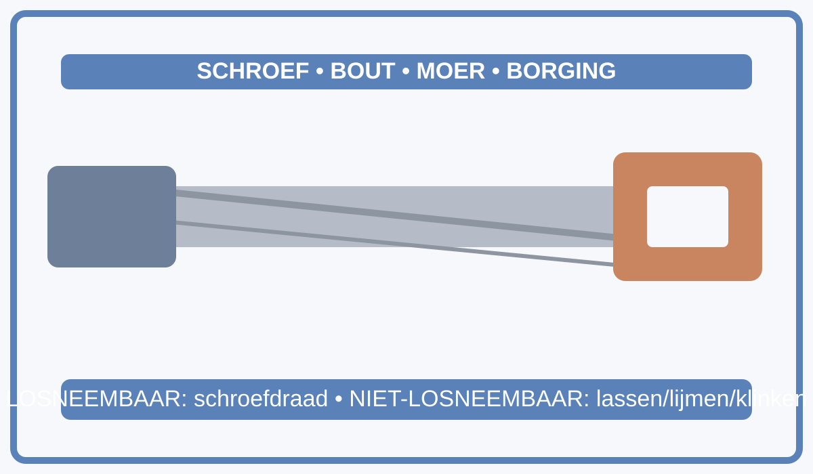

Wet van Ohm
Gebruik deze poster bij doel 1 voor U, I en R.
Samenvatting op basis van de aangeleverde lesfoto's + koppeling naar Wet van Ohm en laspraktijk.
Je gebruikt de formules om spanning, stroom en weerstand te berekenen en je lasinstellingen beter te begrijpen.
| Domein | Wat je moet kunnen |
|---|---|
| Lasapparatuur bedienen | Gebruik van beklede elektrode, gebruik van MIG/MAG-automaat, lasparameters veilig instellen. |
| Verbindingstechnieken | Soorten verbindingen herkennen en toepassen: bout, moer, klink, schroefdraad, puntlas, lijm; montage en demontage kiezen op functie. |
| Meetinstrumenten selecteren | Schuifmaat, micrometer, meetlat/rolmeter, winkelhaak, gradenboog, meetklok en kalibers correct kiezen. |
| Materialen | Materiaalkeuze onderbouwen volgens toepassing, sterkte, temperatuurbelasting en veiligheid. |
Gebruik deze poster bij doel 1 voor U, I en R.

Gebruik deze poster bij doel 2 en doel 3 voor verbindingen en materiaalinzicht.
Maak nu de oefenunit met vragen over de Wet van Ohm, laspraktijk, verbindingstechnieken en materialen.
Start oefening Terug naar hoofdthema